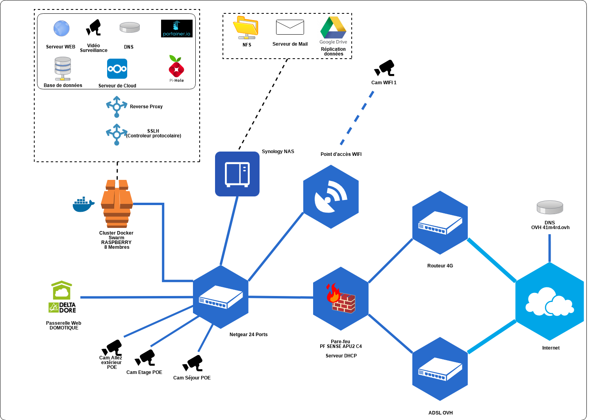

Index :
Qui suis-je ?
Je m’appelle Benjamin, je suis Consultant en Cybersécurité. Mon travail consiste à avoir une expertise technique dans le domaine de la cybersécurité. J’aide mes clients à concevoir ou orienter leur système d’information de manière sécurisé. Il existe différents domaines qui peuvent entrer en jeu, comme la sécurité des réseaux, des logiciel ou encore des utilisateurs. Je peux intervenir sur chacun de ces domaines pour réaliser un audit, proposer une architecture ou tout simplement réaliser l’infrastructure. C’est à dire que je peux être sur un niveau conceptuel, décisionnel ou bien technique. J’attache beaucoup d’importance à pouvoir évoluer dans tous ces niveaux d’un système d’information car il me permet d’être un facilitateur dans les entreprises. Chaque niveau pourront ainsi se comprendre et s’aider pour que l’objectif d’une entreprise soit atteinte.
Je suis avant tout un passionné de cybersécurité qui cultive la polyvalence. Je suis compétiteur dans l’âme ce qui implique que j’aime les challenges. Mon défaut principal est que parfois j’avance en force, ma qualité essentielle reste ma positivité à toute épreuve. Je suis également capable de monter en compétence rapidement sur divers sujets.
Mon profil n’est pas un profil spécialisé !
La bonne humeur et la bienveillance se communiquent quotidiennement.
Expérience
Consultant Cybersécurité
Mes compétences
- Analyse des besoins métiers du client
- Proposition d'architecture technique, de planning, de plan d'action et de budget
- Rédaction de rapports d'intervention
- Rédaction de documentation technique
- Réponse à incident technique
- Réponse à incident suita à une activité malveillante
- Échange technique avec les équipes de support des éditeurs
- Mise en productiond d'architectures
- Installation des équipements
- Maintenance des équipements
- Configuration réseau
- Configuration pare-feu
- Configuration VPN (nomade, site à site)
- Analyse des logs et des règles de sécurité
- Rédaction de la documentation d'exploitation
- Activité de support téléphonique ou mail
- Support et maintenance des équipements : Stormshield, Fortigate, Chekpoint McAfee, Pfsense, Hirschmann
- Support des problématiques réseaux avancés (ouverture de flux complexe)
- Résolution de bug d’implémentation ou d’exploitation (anomalie d’utilisation)
- Résolution de bugs techniques et de pannes matériels / RMA éditeur (défaillance matérielle)
- Pare-feux : McAfee Firewall Enterprise, Fortinet, pfSense, CheckPoint, Stormshield, ForcePoint
- Pare-feux industriels : Hirschmann
- Routeurs industriels : Westermo Falcon, Westermo MRD-3xx, Westermo DR-2xx
- Commutateurs : HP ProCurve, HP FlexFabric, Extrem Network, Netgear
Me consulter directement par mail : b.aimard@41m4rd.ovh
Formateur
Voici la liste de mes différentes expériences en tant que formateur :- Stormshield formation fonctionnelle
- Formateur sur la technologie VPN IPSEC - Mobile, Site à Site, compréhension des phases
- Formateur à l'utilisation d'ELK
- Formateur en programmation, algorithme de base et objet
- Maitre de stage pour les universitaires
Connaissance par domaine
Informatique et sécuritéGestion des risques
Environnements
Authentification
Scripting
Gestion de parc, Configuration
|
Méthode de conceptualisationMéthodologies
Programmation
Framework
|
Base de donnéesAdministration
Big Data
|
RéseauPare-feu
VPN
|
Index
Formation
2013 - 2015 Master MIAGE
Méthodes Informatiques Appliquées à la Gestion des EntreprisesUniversité Bordeaux 1
Éffectué en apprentissage
2012 - 2013 Licence MIAGE
Méthodes Informatiques Appliquées à la Gestion des EntreprisesUniversité Paul Sabatier (Toulouse III)
Éffectué en apprentissage
2010 - 2012 BTS IG
BTS Informatique de Gestion - Option développeurLycée Gustave Eiffel
Éffectué en apprentissage
2008 - 2010 Licence DROIT, (1er année) ADMIS
Université Montesquieu-Bordeaux IVTravail étudiant en parallèle
2006 - 2008 Capacité en droit, DROIT, ADMIS
Université Montesquieu-Bordeaux IVTravail étudiant en parallèle, ce diplôme est de classe IV (équivalent au baccalauréat).
Index
Certifications/Formations
- 2019 PfSense Fundamentals and Advanced Application
- 2019 Docker Certified Associate (Sans formation)
- 2018 Forcepoint Next Generation Firewall Administrator
- 2018 Formation Ansible (3 jours)
- 2018 Formation Forensic et analyse de malware (5 jours)
- 2017 Stormshield CSNE
- 2017 Stormshield CSNA
Index
Projets personnels
- Création d’une stack docker à domicile avec des raspberrys
- Cluster de Pfsense à domicile
- Redondance de connexion ADSL / 4G
- Délégation du stockage sur un NFS
Mon laboratoire personnel :

Index
Les langues que je parle ou écrit
-
Français langue natal - écriture avec des fautes occasionnelles.
-
Anglais apprentissage scolaire - utilisé lors de formation suivies, pour des supports techniques (mail et téléphone).
-
Roumain - compréhension orale, non écrit. Apprentissage rapide possible.
-
Assembleur - En cours d’apprentissage.
Index
Mes participations à des challenges divers
- 2019 Cybercamp CRPOC
- 2019 Participation à un Bug Bounty privé (Yes We Hack)
- 2019 Participation à la Sthack de Bordeaux CTF et conférence
- 2018 Équipe de tests des challenges de la FIC
- 2018 Participation au challenge LADON
- 2018 Cybercamp CRPOC
- 2018 Participation à la Sthack de Bordeaux CTF
- 2017 Participation à la Sthack de Bordeaux CTF
- 2015 Nuit de l’informatique
- 2014 Nuit de l’informatique - Vainqueur défi accessibilité numérique
Index
Conférences, jury etc …
- 2018 Auditeur à Hack-it-n
- 2018 Auditeur à Sthack
- 2017 Auditeur à Sthack
Index
Sports
Pourquoi une section sport dans un CV de consultant en Cybersécurité ?
Je pense que certains défis requièrent un fort esprit d’équipe et de compétition pour être relevés.
- Combattant en Boxe Française 2ième série
- Pilote Moto en Vitesse et Moniteur (BFA)